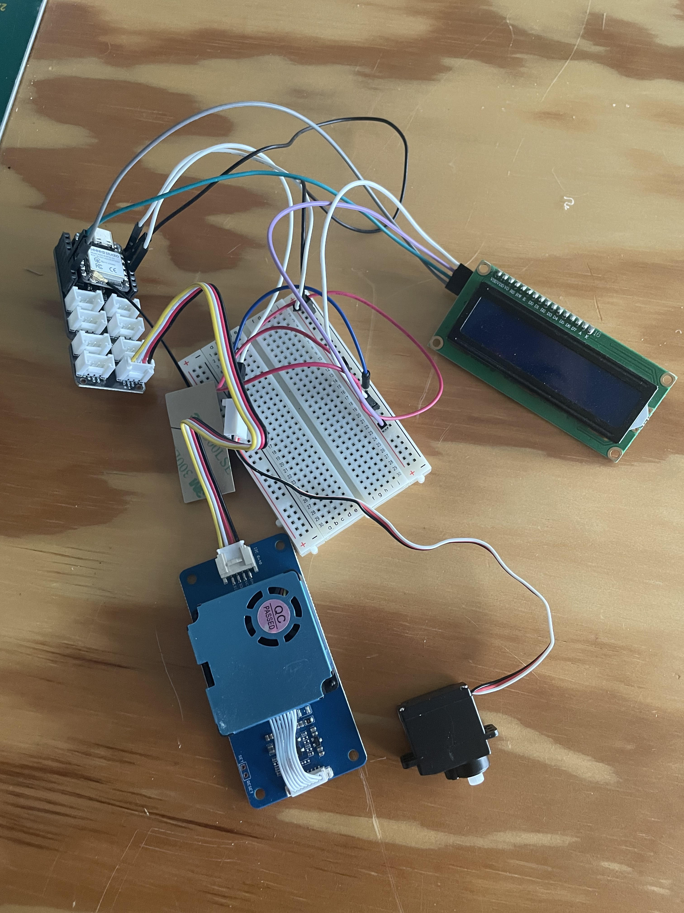
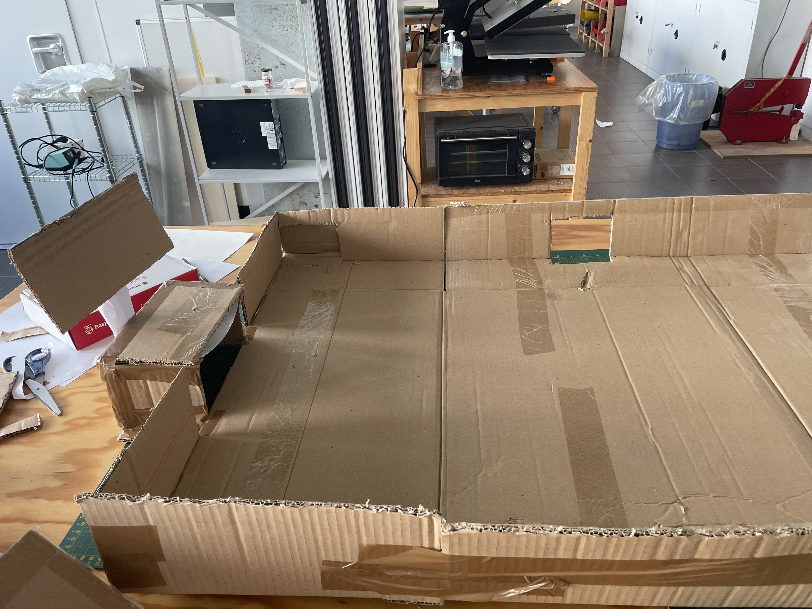
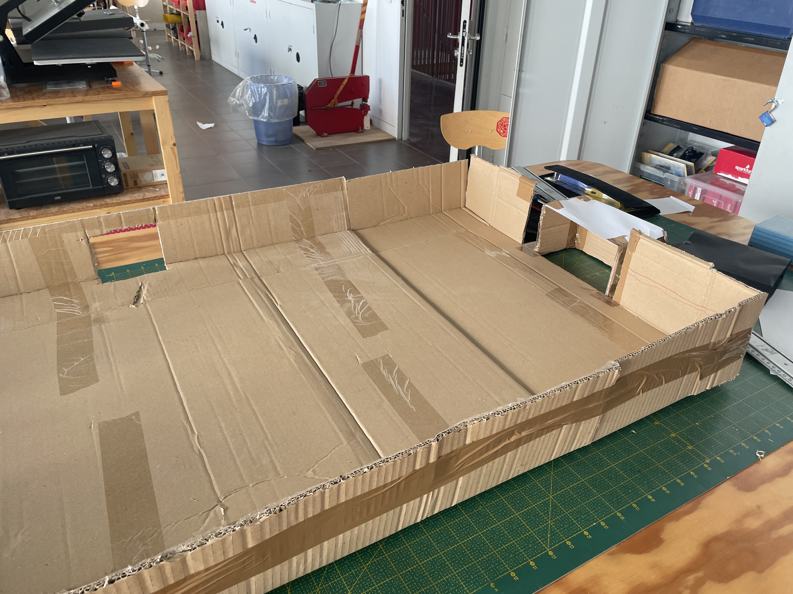
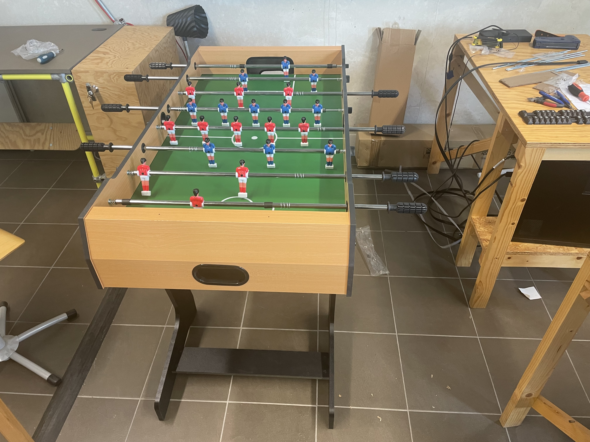
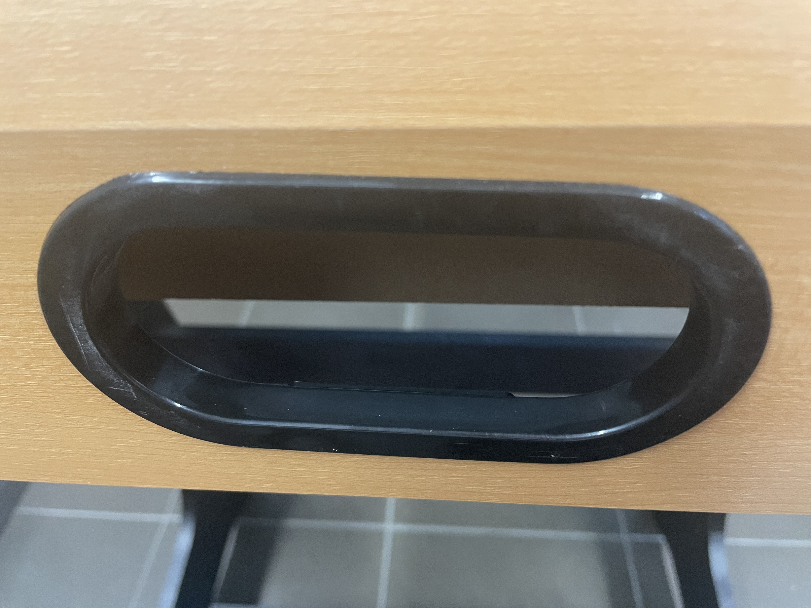
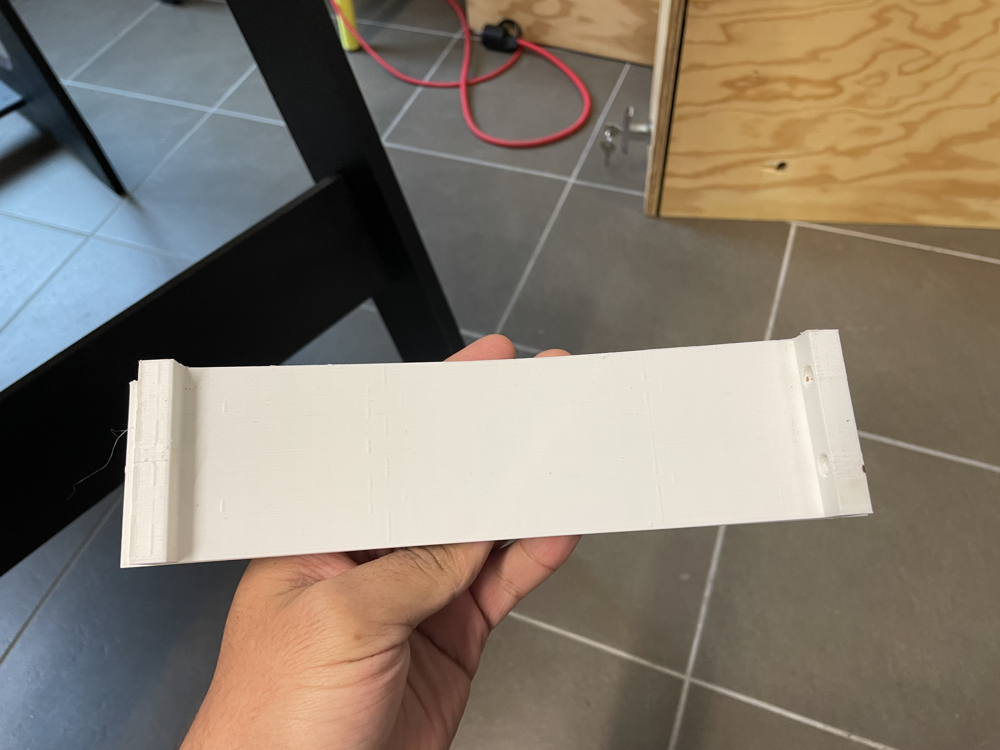
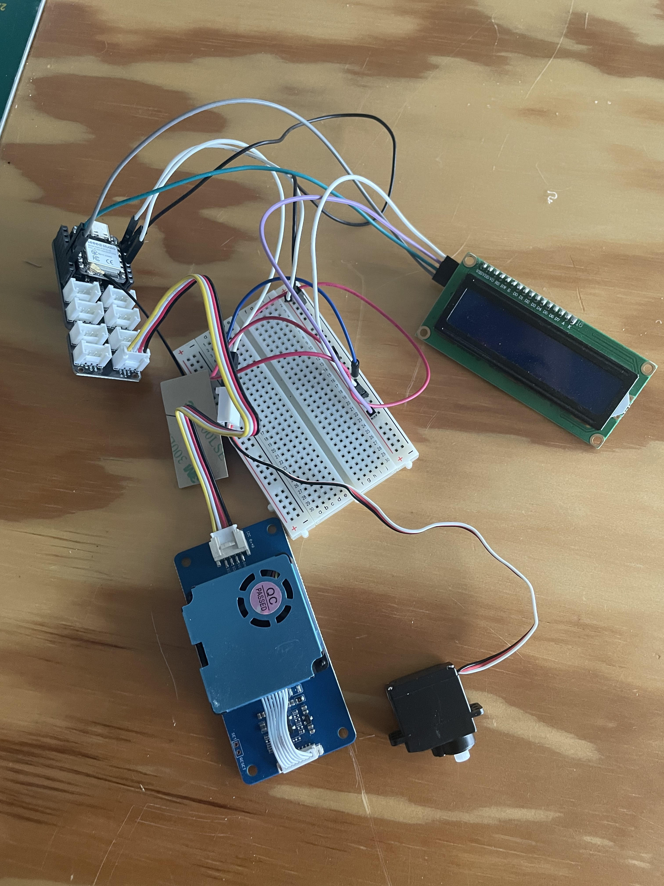
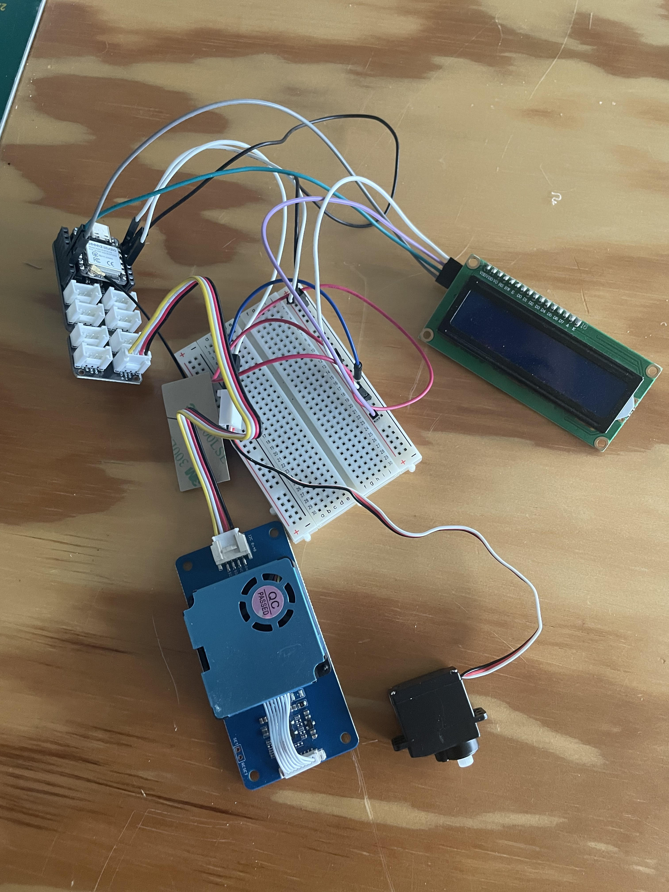
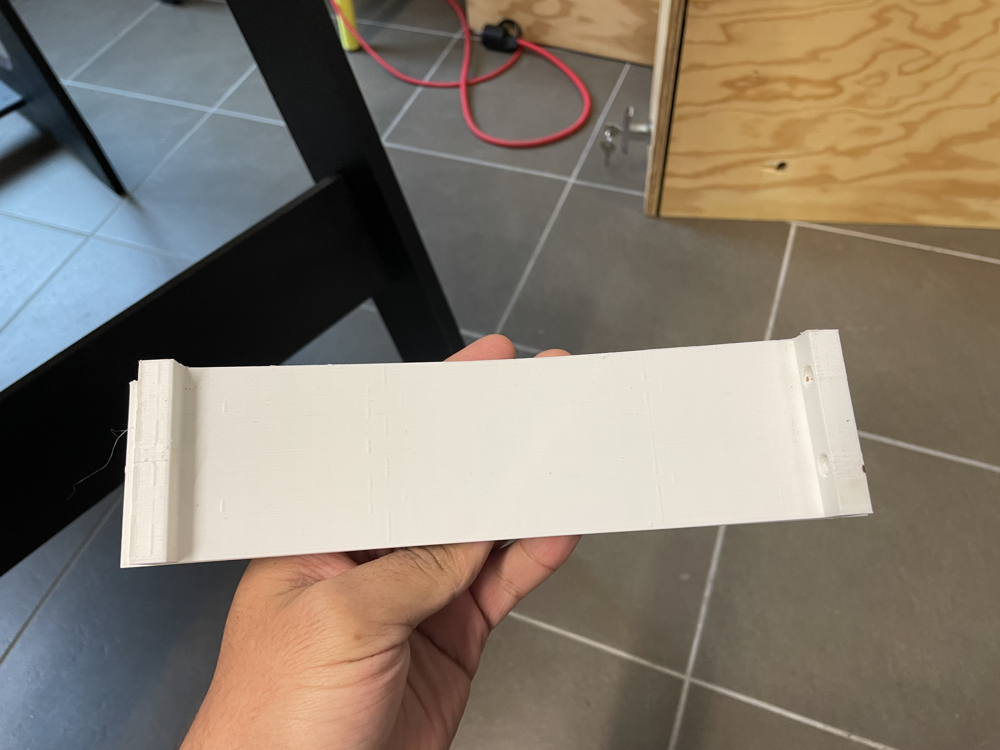
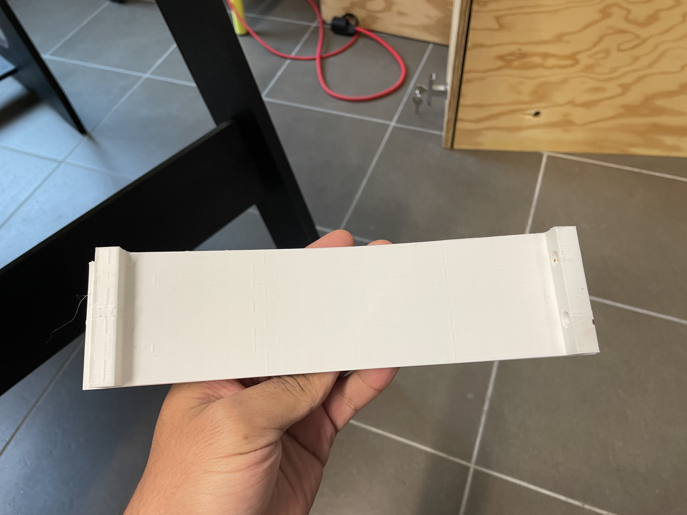

Au début de ce cours nous avons vu les bases d'Arduino qui vont nous
être utiles par la suite dans la réalisation des projets.
Le fonctionnement d'un servo moteur , d'une LED , d'un écran , de la
carte Arduino elle même ainsi que le micro Controlleur ESP32.
On a par la même occasion était initié à la modélision 3D sur Fusion voici un petit exemple de ce qu'on a fait :

Projet Bird
Ensuite nous nous sommes inspirés d'un projet qui se nomme Bird qui est un oiseau qui en fonction de sa position donne une indication sur la qualité de l'air.
Pour notre projet , nous prennons en compte la concentration en particules inférieur à 2.5um.L'objectif serait de placer 4 Bird dans les différents ateliers du FacLab (menuiserie , céramic etc..)
Ce que nous avons fait en introduction nous a permis de réaliser toutes les tâches nécessaires à l'aboutissement de ce projet
On a donc utlisé un micro controlleur ESP32 un servo moteur un capteur de qualité de l'air et un écran LED ou LCD
l'idée était dans un premier temps de réussir à capter la qualité de l'air et d'ensuite fixer des palier à partir des quelles savoir si la qualité de l'air était bonne moyenne ou mauvaise.
Pour cela nous avons effectuer des recherches sur internet et nous sommes arrivés à cette conclusion : quand la concentrationen Pm 2.5 est inférieurà 12 la qualité de l'air est bonne , entre 12 et 35 elle est modérée au dessus 35 elle est nocive et il faut ouvrir les fenêtres rapidement.
Une fois sa mis en place , on a pu attaquer la partie Web , on a mis en place une base de données en MySQL et Prisma, j'ai crée des formulaires Html Css pour ajouter un device c'est à dire un bir (capteur de qualité de l'air) , et un formulaire pour afiicher les valeurs en Pm 2.5 que l'on a récuperé dans un intervalle de temps que l'on choisie.
J'ai découver Charte Js qui est une bibliothèque JavaScript pour la visualistaion de données que j'ai ajouté à mon formulaire.
Voici à quoi ressemble le projet final :
Avec les bases acquéri en modélisation 3D lors de l'introduction j'ai réalisé la base du Bird :
Projet Baby-Foot Connecté
Ce matin, on s'est attaqués au prototype de baby-foot connecté pour
notre projet IoT. On a pris les mesures du modèle Bonzini sur un carton,
reproduisant le terrain de jeu avec précision. Ensuite, on a travaillé
sur le support de l'écran tactile Raspberry Pi 3 modèle B+, en imaginant
comment positionner les LEDs tout autour du terrain pour créer une
ambiance lumineuse unique. On a également réfléchi à l'emplacement idéal
pour les deux capteurs laser, stratégiquement placés là où la balle
roule après qu'on a concédé un but. En résumé, entre les
mesures, la maquette, le support d'écran, et la disposition des LEDs, on
progresse bien dans la réalisation de notre baby-foot connecté.


2 semaines d'alternance écoulées on a enfin reçu notre baby foot ce qui va nous faciliter grandement la réalisation du projet
on s'est aperçus que l'on pouvait directement modifier le baby foot , j'ai alors modélisé la pièce dans laquelle le balon atteri après qu'il y'ait un but.


Voici à quoi ressemble la pièce modélisée sur fusion et après impression :

J'ai aussi eu à faire des formulaires comme pour le projet du Bird, un formulaire de création de joueur qui peut ensuite nous mener vers un formulaire de création de partie et on se base uniquement sur les joueurs présent en base de données et une fois la partie crée le formualire de la partie en cours avec le score des deux équipes.
Je vous laisse voir par vous même :
j'ai aussi ajouté un bouton fin de partie à mon formulaire de partie , cela va permetre de faire passer l'état de la partie de En Cours à Finie pour que ensuite quand il y'a un but dans ma route Post je cherche la partie qui est En Cours puis si c'est l'équipe bleu qui a marquée j'incremente de +1 le score de l'équipe Bleu et de même avec les rouges je ne sais pas si on aura le temps de mettre sa en place mais c'est de cette manière que je compte procéder.
On réussi à envoyer la requête du but depuis l'arduino , l'idée est que au moment dde la requête on vérifie dans la table game la partie qui a un état En cours qui correspond à la partie en cours ^^.Ensuite si c'est l'équipe bleu qui a marqué c'est +1 à l'adversaire 2 et si c'est les rouges c'est +1 à l'adversaire 1 et sa jusqu'à que l'on décide de mettre un terme à la partie en cliquant sur le bouton que j'ai ajouté dans le formulaire pour mettre un terme à la partie il va faire passer l'état de la partie de En cours à Finie.
On va maintenant essayer de tout monter sur le babyfoot et de le tester. Voila à quoi ressemble les nouveaux buts :
 


 
